Breaking Bad: Historia
Walter White (Bryan Cranston) es un frustrado profesor de química en un instituto, padre de un joven discapacitado y con una mujer (Anna Gunn) embarazada.
Walt, además, trabaja en un lavadero de coches por las tardes.
Cuando le diagnostican un cáncer pulmonar terminal se plantea qué pasará con su familia cuando él muera.
En una redada de la DEA organizada por su cuñado (Dean Norris) reconoce a un antiguo alumno suyo, Jesse Pinkman (Aaron Paul), a quien contacta para fabricar y vender metanfetamina y así asegurar el bienestar económico de su familia.
Pero el acercamiento al mundo de las drogas y el trato con traficantes y mafiosos contamina la personalidad de Walter, el cual va abandonando poco a poco su personalidad recta y predecible para convertirse en alguien sin demasiados escrúpulos cuando se trata de conseguir lo que quiere.
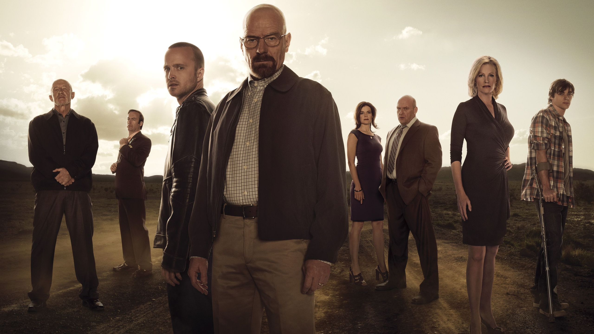
Personajes
- Walter White (Bryan Craston):
Es un profesor de química de 50 años de edad.
Le diagnosticaron cáncer pulmonar terminal y esto hizo cambiar drásticamente su manera de pensar.
Desconcertado y preocupado por conseguir cierta seguridad económica para su familia, sirviéndose de su vasto conocimiento en química, Walt comienza la producción y distribución de metanfetamina.
A medida que su turbio negocio va progresando, Walter va obteniendo una notoria reputación con el nombre de Heisenberg.
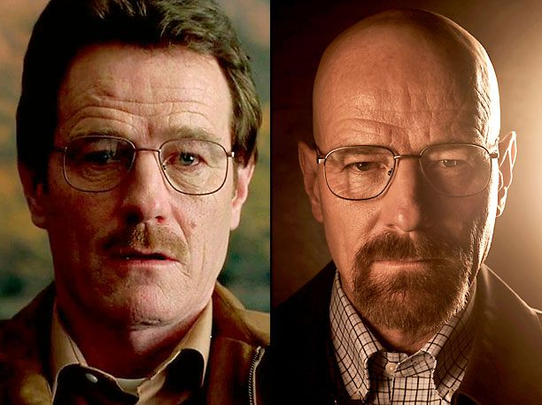
- Jesse Pinkman (Aaron Paul):
Bajo el sobrenombre de "Capitán Cook" es el compañero de White en el negocio de la metanfetamina.
Fue alumno de Walter White en la asignatura de Química en el instituto, la cual suspendió.
Paul ve a Jesse como un joven extraño.
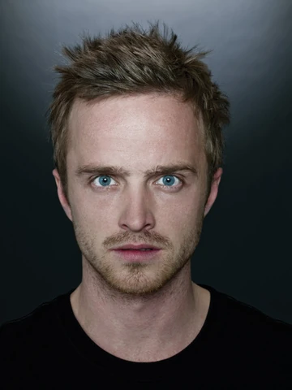
- Skyler White (Anna Gunn):
Es la esposa de Walter.
Al principio de la serie, antes de que Walt reciba el diagnóstico de cáncer, está embarazada del segundo hijo de ambos.
A medida que Walt va teniendo actitudes extrañas, comienza a sospechar de él.
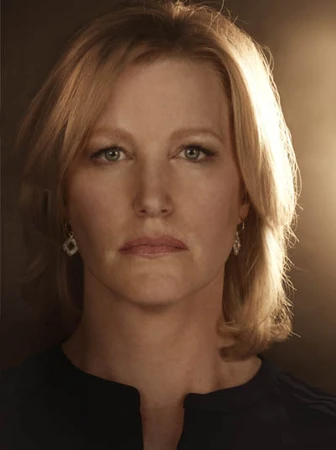
- Hank Schrader (Dean Norris):
Es un agente de la DEA, casado con Marie Schrader.
Investiga la llegada de una nueva persona conocida como "Heisenberg" al negocio de la metanfetamina, desconociendo que es su cuñado Walter.
Hank representa un perfil de persona completamente opuesto al que tenía Walter antes de iniciarse en el negocio ilegal de las drogas: espontáneo, desinhibido y decidido.
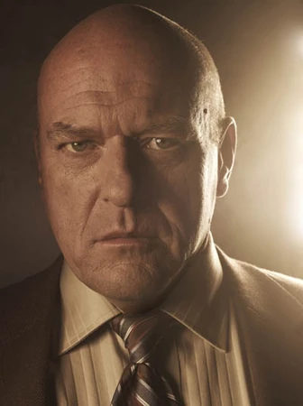
- Walter Jr. (Rj Mitte):
Es el hijo adolescente de Walter y Skyler.
Nació con parálisis cerebral, lo cual le provoca algunos problemas para hablar y dificultades motrices para vestirse o caminar, por lo que usa muletas.
- Marie Schrader (Betsy Brandt):
Es la hermana de Skyler y esposa de Hank.
Aconseja constantemente a los demás, pero es incapaz de aplicarse sus propios consejos.
Ha sufrido de cleptomanía, lo cual le ha traído problemas con la ley y su familia.

- Saul Goodman (Bob Odenkirk):
Es un abogado de dudosa reputación que se anuncia en la TV abierta con el lema "Better Call Saul" (Mejor llama a Saúl).
Goodman ayuda a Walter y a Jesse a blanquear los beneficios del negocio de la metanfetamina y a solucionar problemas legales con métodos pocos ortodoxos.
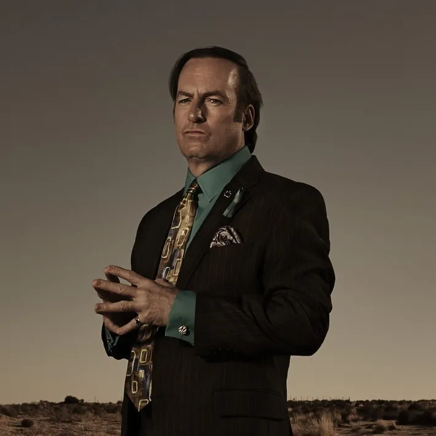
- Gus Fring (Giancarlo Esposito):
Este amable y emprendedor hombre de negocios de nacionalidad chilena, no sólo es dueño del mayor imperio de comida de pollos de Nuevo México sino también del de metanfetamina del mismo estado.
De cara a la galería, Fring es un gran benefactor de las causas anti-droga y colaborador de la DEA.
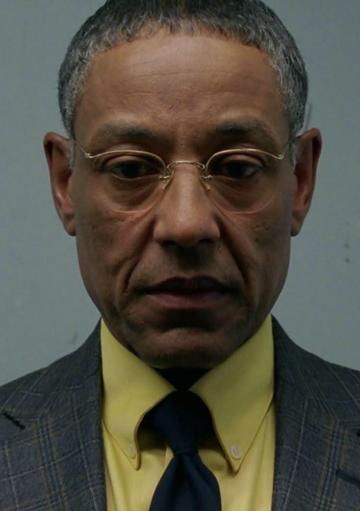
- Mike Ehrmantraut (Jonathan Banks):
Es un investigador privado que trabaja para Gus Fring.
Tiempo después el hombre se asocia con Walter White en el negocio de la metanfetamina, encargándose de la parte de la producción y los negocios.
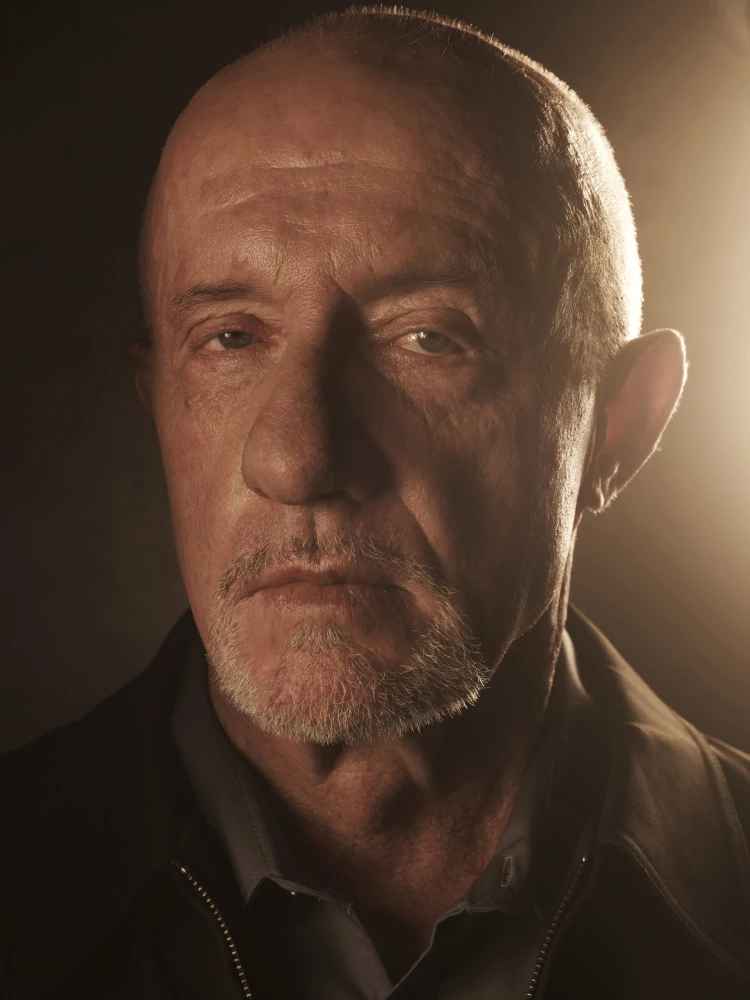
- Todd Alquist (Jesse Plemons):
Es un empleado de "Vamonos pest control" que asiste a Walt y Jesse en su refundación del negocio de fabricación de metanfetamina y sobrino del lider de una banda de neonazis.
Al ver conflictos entre Jesse y Walter, el hombre sirvio como un tipo de remplazo del joven, ayudando como asistente en el laboratorio a Walter.
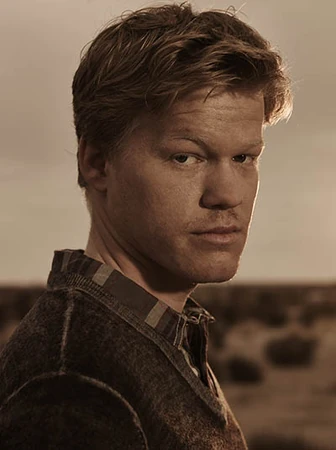
- Lydia Rodarte-Quayle (Laura Fraser):
Es una ejecutiva de Madrigal Electromotive que estuvo asociada al imperio de droga de Gus Fring.
Tiempo despues la mujer se asocia con Walter y Jesse en el negocio de la metanfetamina, encargándose de la distribución del producto al exterior.
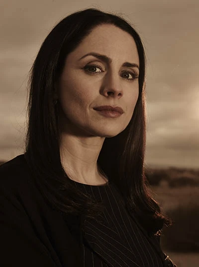
- Tuco Salamanca (Raymond Cruz):
Es un demencial especialista en drogas mexicano, que se convierte en el distribuidor de metanfetanima de Jesse y Walter.
Es imprevisible y propenso a arrebatos violentos, pero respeta a Walt por su producto superior, inteligencia y agallas.
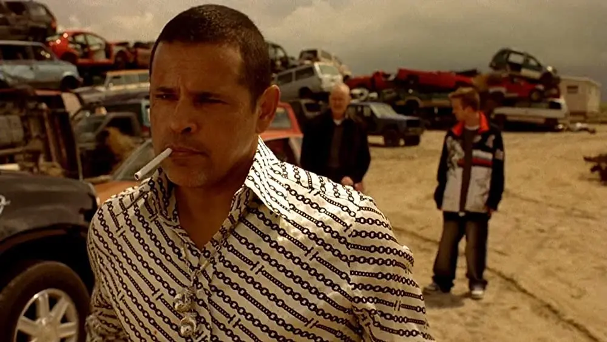
- Hector Salamanca (Mark Margolis):
Es el tio de Tuco Salamanca y antiguamente capo del Cartel de Juaréz.
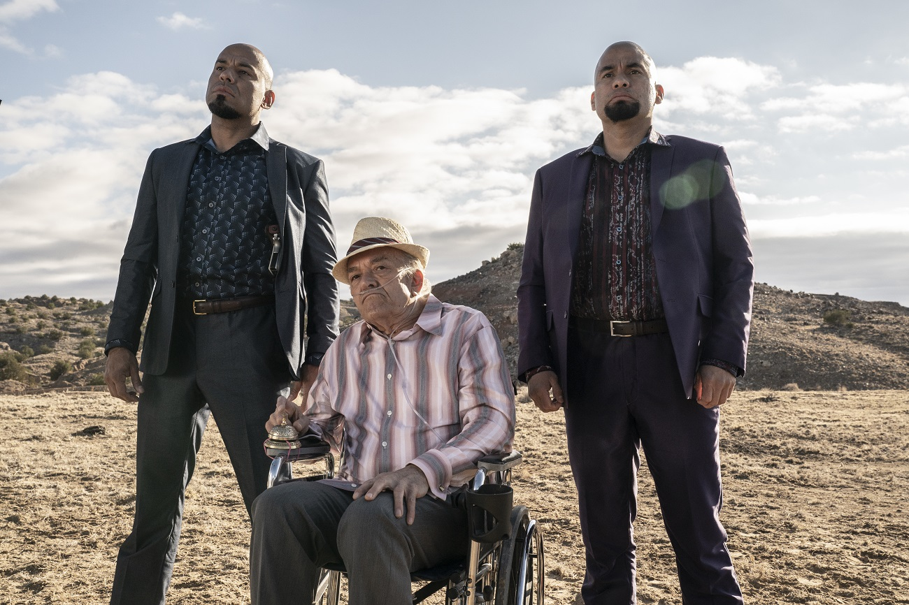
- Jack Welker (Michael Bowen):
Es el tío de Todd, líder de un grupo de neonazis que además de perseguir sus propios intereses, suele hacer trabajos recibiendo encargos de otros.
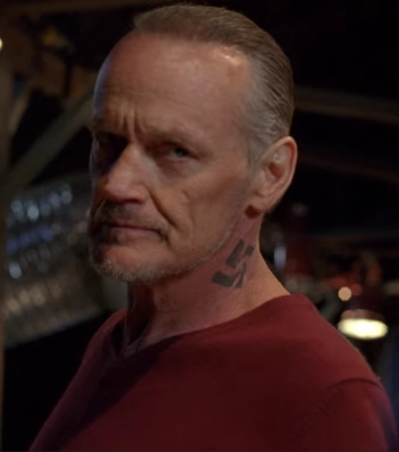